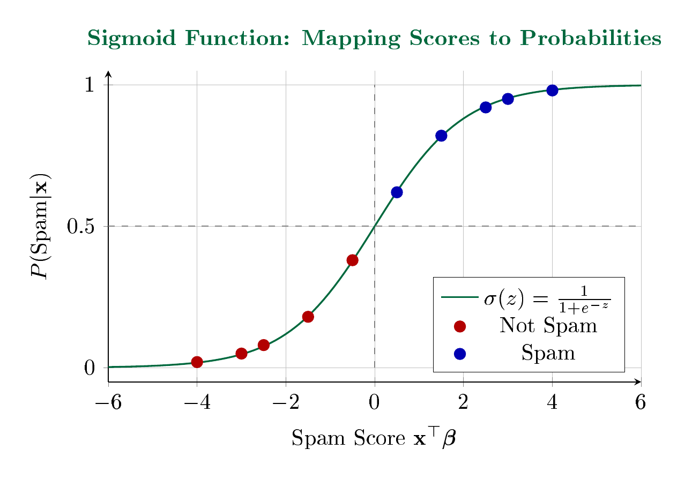

LebNet Tech Fellows — Detailed Notes
Linear regression deals with finding the expected value of an explained variable $y$ given some explanatory variable $x$ where $y \in \R$. Now consider the case where $y$ is a boolean variable in $\{0, 1\}$.
Similar to the regression case, we consider a training set:
$$D_n := \{(X_i, Y_i)\}_{1 \leq i \leq n}$$The data points $(X_i, Y_i)$ are i.i.d. random variables following a distribution $\mathcal{P}$ on $\mathcal{X} \times \mathcal{Y}$, where $\mathcal{X} = \R^d$ and $\mathcal{Y} = \{0, 1\}$.
Consider the task of classifying emails as spam ($Y = 1$) or not spam ($Y = 0$). Given features $\mathbf{x}$ extracted from an email (word frequencies, sender information, etc.), we want to predict the probability that the email is spam.

Sigmoid Function: Mapping Scores to Probabilities
The sigmoid function maps any real-valued score to a probability between 0 and 1. Emails with high spam scores are classified as spam; those with low scores are not. The decision boundary occurs at $\mathbf{x}^\top\boldsymbol{\beta} = 0$, where $P(\text{Spam}) = 0.5$.
This setup is similar to linear regression, except that our target function $y = p(x)$ is not linear. We need to find a way to view this new function as a linear function, subject to two constraints:
Boundedness. The function $p(x)$ must be bounded between 0 and 1, since it represents a probability.
Diminishing sensitivity. The change in $p(x)$ is not exactly linear in $x$. If our prediction $p(x)$ is already large (close to 1), changing $x$ by a small amount should not affect the final prediction as much as if $p(x)$ were close to 0.5. In other words, if we are confident in our prediction, we need a larger move in $x$ to change our prediction significantly.
How can we make a function that is bounded asymptotically in $y$ and requires a multiplicative change in the output to reflect a linear change in the input?
A natural choice is the logarithm — but this is only bounded in one direction. To bound it in both directions, we use the logistic (logit) transformation:
$$\text{logit}(p) = \log\left(\frac{p}{1-p}\right)$$Hence the term logistic regression.
Setting the logit equal to a linear function of $x$:
$$\log\left(\frac{p}{1-p}\right) = \beta_0 + \mathbf{x}^\top \boldsymbol{\beta}$$Solving for $p$:
$$\begin{aligned} \frac{p}{1-p} &= e^{\beta_0 + \mathbf{x}^\top \boldsymbol{\beta}} \\[8pt] p &= (1-p) \cdot e^{\beta_0 + \mathbf{x}^\top \boldsymbol{\beta}} \\[8pt] p &= e^{\beta_0 + \mathbf{x}^\top \boldsymbol{\beta}} - p \cdot e^{\beta_0 + \mathbf{x}^\top \boldsymbol{\beta}} \\[8pt] p\left(1 + e^{\beta_0 + \mathbf{x}^\top \boldsymbol{\beta}}\right) &= e^{\beta_0 + \mathbf{x}^\top \boldsymbol{\beta}} \\[8pt] p(\mathbf{x}; \beta_0, \boldsymbol{\beta}) &= \frac{e^{\beta_0 + \mathbf{x}^\top \boldsymbol{\beta}}}{1 + e^{\beta_0 + \mathbf{x}^\top \boldsymbol{\beta}}} = \frac{1}{1 + e^{-(\beta_0 + \mathbf{x}^\top \boldsymbol{\beta})}} \end{aligned}$$This is the sigmoid function (or logistic function), denoted $\sigma(z) = \frac{1}{1 + e^{-z}}$.
The overall specification is much easier to grasp in terms of the transformed probability (the logit) than in terms of the untransformed probability.
To minimize the misclassification rate, we predict $Y = 1$ when $p \geq 0.5$ and $Y = 0$ when $p < 0.5$. This means predicting 1 whenever $\beta_0 + \mathbf{x}^\top \boldsymbol{\beta} \geq 0$, and 0 otherwise.
Result: Logistic regression gives us a linear classifier.
The decision boundary separating the two predicted classes is the solution of:
$$\beta_0 + \mathbf{x}^\top \boldsymbol{\beta} = 0$$This is a hyperplane in $\R^d$. Finding the logistic regression parameters is therefore equivalent to finding a linear classifier.
We derive the signed distance from a point $\mathbf{x}$ to the decision boundary.
Setup: The decision boundary is $\{\mathbf{z} : \boldsymbol{\beta}^\top \mathbf{z} + \beta_0 = 0\}$. The unit normal vector to this hyperplane is $\frac{\boldsymbol{\beta}}{|\boldsymbol{\beta}|}$.
Derivation: Let $\mathbf{x}_0$ be any point on the decision boundary (so $\boldsymbol{\beta}^\top \mathbf{x}_0 + \beta_0 = 0$). The signed distance from $\mathbf{x}$ to the boundary is the projection of $(\mathbf{x} - \mathbf{x}_0)$ onto the unit normal:
$$\text{distance} = (\mathbf{x} - \mathbf{x}_0) \cdot \frac{\boldsymbol{\beta}}{|\boldsymbol{\beta}|} = \frac{\mathbf{x}^\top \boldsymbol{\beta} - \mathbf{x}_0^\top \boldsymbol{\beta}}{|\boldsymbol{\beta}|}$$Since $\mathbf{x}_0$ is on the boundary, we have $\mathbf{x}_0^\top \boldsymbol{\beta} = -\beta_0$. Substituting:
$$\boxed{\text{distance} = \frac{\beta_0 + \mathbf{x}^\top \boldsymbol{\beta}}{|\boldsymbol{\beta}|}}$$Interpretation: The class probabilities depend on the distance from the boundary. Probabilities approach 0 or 1 more rapidly when $|\boldsymbol{\beta}|$ is larger.
To minimize the empirical risk, we need to choose a loss function to assess the performance of a prediction.
A natural loss is the binary loss: 1 if there is a mistake ($f(X_i) \neq Y_i$), and 0 otherwise. The empirical risk is:
$$\hat{\mathcal{R}}_n(\boldsymbol{\beta}) = \frac{1}{n} \sum_{i=1}^{n} \mathbf{1}_{Y_i \neq \mathbf{1}_{X_i^\top \boldsymbol{\beta} \geq 0}}$$Problem: This loss function is neither convex nor differentiable in $\boldsymbol{\beta}$. The minimization problem $\min_{\boldsymbol{\beta}} \hat{\mathcal{R}}_n(\boldsymbol{\beta})$ is extremely hard to solve (NP-hard in general).
The idea of logistic regression is to replace the binary loss with a convex surrogate loss. The logistic loss $\ell: \R \times \{0,1\} \to \R_+$ assigns to a linear prediction $\hat{y} = \mathbf{x}^\top \boldsymbol{\beta}$ and an observation $y \in \{0,1\}$ the loss:
$$\ell(\hat{y}, y) := y \log(1 + e^{-\hat{y}}) + (1-y) \log(1 + e^{\hat{y}}) \tag{1}$$The logistic regression estimator is the solution of:
$$\hat{\boldsymbol{\beta}}_{\text{logit}} = \underset{\boldsymbol{\beta} \in \R^d}{\arg\min} \frac{1}{n} \sum_{i=1}^{n} \ell(\mathbf{X}_i^\top \boldsymbol{\beta}, Y_i)$$where $\ell$ is the logistic loss defined in Equation (1).
Advantage over hinge loss: The logistic loss has a probabilistic interpretation by modeling $\mathbb{P}(Y = 1 | X)$.
We now show that minimizing the logistic loss is equivalent to maximizing the likelihood under a Bernoulli model.
We model the conditional probabilities using the sigmoid function:
$$\begin{aligned} P(Y = 1 | X = \mathbf{x}) &= \sigma(\boldsymbol{\theta}^\top \mathbf{x}) \\[8pt] P(Y = 0 | X = \mathbf{x}) &= 1 - \sigma(\boldsymbol{\theta}^\top \mathbf{x}) \end{aligned}$$These can be combined into a single expression using the Bernoulli distribution:
$$P(Y = y | X = \mathbf{x}) = \sigma(\boldsymbol{\theta}^\top \mathbf{x})^y \cdot [1 - \sigma(\boldsymbol{\theta}^\top \mathbf{x})]^{(1-y)}$$For i.i.d. data, the likelihood is the product over all data points:
$$L(\boldsymbol{\theta}) = \prod_{i=1}^{n} \sigma(\boldsymbol{\theta}^\top \mathbf{x}^{(i)})^{y^{(i)}} \cdot [1 - \sigma(\boldsymbol{\theta}^\top \mathbf{x}^{(i)})]^{(1-y^{(i)})}$$Taking the logarithm (which converts the product to a sum):
$$LL(\boldsymbol{\theta}) = \sum_{i=1}^{n} \left[ y^{(i)} \log \sigma(\boldsymbol{\theta}^\top \mathbf{x}^{(i)}) + (1 - y^{(i)}) \log(1 - \sigma(\boldsymbol{\theta}^\top \mathbf{x}^{(i)})) \right]$$The negative log-likelihood is:
$$-LL(\boldsymbol{\theta}) = \sum_{i=1}^{n} \left[ -y^{(i)} \log \sigma(\boldsymbol{\theta}^\top \mathbf{x}^{(i)}) - (1 - y^{(i)}) \log(1 - \sigma(\boldsymbol{\theta}^\top \mathbf{x}^{(i)})) \right]$$Using the identity $\sigma(-z) = 1 - \sigma(z)$, we can write $-\log \sigma(z) = \log(1 + e^{-z})$ and $-\log(1 - \sigma(z)) = -\log \sigma(-z) = \log(1 + e^{z})$.
Substituting with $\hat{y} = \boldsymbol{\theta}^\top \mathbf{x}$:
$$-LL(\boldsymbol{\theta}) = \sum_{i=1}^{n} \left[ y^{(i)} \log(1 + e^{-\hat{y}^{(i)}}) + (1 - y^{(i)}) \log(1 + e^{\hat{y}^{(i)}}) \right]$$This is exactly the logistic loss from Equation (1):
$$\boxed{-LL(\boldsymbol{\theta}) = \sum_{i=1}^{n} \ell(\hat{y}^{(i)}, y^{(i)})}$$Conclusion: Minimizing the empirical risk with logistic loss $\Leftrightarrow$ Maximizing the log-likelihood under a Bernoulli model.
First, we compute the derivative of $\sigma(z)$ with respect to $z$:
$$\frac{\partial}{\partial z} \sigma(z) = \frac{\partial}{\partial z} \left( \frac{1}{1 + e^{-z}} \right)$$Using the quotient rule:
$$= \frac{e^{-z}}{(1 + e^{-z})^2} = \frac{1}{1 + e^{-z}} \cdot \frac{e^{-z}}{1 + e^{-z}} = \sigma(z) \cdot (1 - \sigma(z))$$ $$\boxed{\frac{\partial}{\partial z} \sigma(z) = \sigma(z)(1 - \sigma(z))}$$Using the chain rule:
$$\frac{\partial}{\partial \theta_j} \sigma(\boldsymbol{\theta}^\top \mathbf{x}) = \frac{\partial \sigma}{\partial z} \cdot \frac{\partial z}{\partial \theta_j}$$where $z = \boldsymbol{\theta}^\top \mathbf{x}$.
Since $\frac{\partial z}{\partial \theta_j} = x_j$:
$$\boxed{\frac{\partial}{\partial \theta_j} \sigma(\boldsymbol{\theta}^\top \mathbf{x}) = \sigma(\boldsymbol{\theta}^\top \mathbf{x})(1 - \sigma(\boldsymbol{\theta}^\top \mathbf{x})) \cdot x_j}$$Starting with the log-likelihood for a single data point:
$$\frac{\partial}{\partial \theta_j} \left[ y \log \sigma(\boldsymbol{\theta}^\top \mathbf{x}) + (1-y) \log(1 - \sigma(\boldsymbol{\theta}^\top \mathbf{x})) \right]$$Applying the chain rule to each term:
$$\begin{aligned} &= \frac{y}{\sigma(\boldsymbol{\theta}^\top \mathbf{x})} \cdot \frac{\partial \sigma}{\partial \theta_j} - \frac{1-y}{1 - \sigma(\boldsymbol{\theta}^\top \mathbf{x})} \cdot \frac{\partial \sigma}{\partial \theta_j} \\[8pt] &= \left[ \frac{y}{\sigma(\boldsymbol{\theta}^\top \mathbf{x})} - \frac{1-y}{1 - \sigma(\boldsymbol{\theta}^\top \mathbf{x})} \right] \cdot \frac{\partial \sigma}{\partial \theta_j} \end{aligned}$$Finding a common denominator:
$$= \left[ \frac{y(1 - \sigma(\boldsymbol{\theta}^\top \mathbf{x})) - (1-y)\sigma(\boldsymbol{\theta}^\top \mathbf{x})}{\sigma(\boldsymbol{\theta}^\top \mathbf{x})(1 - \sigma(\boldsymbol{\theta}^\top \mathbf{x}))} \right] \cdot \sigma(\boldsymbol{\theta}^\top \mathbf{x})(1 - \sigma(\boldsymbol{\theta}^\top \mathbf{x})) \cdot x_j$$Simplifying the numerator:
$$y - y\sigma(\boldsymbol{\theta}^\top \mathbf{x}) - \sigma(\boldsymbol{\theta}^\top \mathbf{x}) + y\sigma(\boldsymbol{\theta}^\top \mathbf{x}) = y - \sigma(\boldsymbol{\theta}^\top \mathbf{x})$$The $\sigma(\boldsymbol{\theta}^\top \mathbf{x})(1 - \sigma(\boldsymbol{\theta}^\top \mathbf{x}))$ terms cancel:
$$\boxed{\frac{\partial LL}{\partial \theta_j} = \left[ y - \sigma(\boldsymbol{\theta}^\top \mathbf{x}) \right] x_j}$$For the entire dataset:
$$\boxed{\frac{\partial LL(\boldsymbol{\theta})}{\partial \theta_j} = \sum_{i=1}^{n} \left[ y^{(i)} - \sigma(\boldsymbol{\theta}^\top \mathbf{x}^{(i)}) \right] x_j^{(i)}}$$In vector/matrix notation:
$$\nabla LL(\boldsymbol{\theta}) = \mathbf{X}^\top (\mathbf{y} - \sigma(\mathbf{X}\boldsymbol{\theta}))$$where $\mathbf{X} := (\mathbf{X}_1, \ldots, \mathbf{X}_n)^\top$, $\mathbf{y} := (Y_1, \ldots, Y_n)^\top$, and $\sigma(\mathbf{X}\boldsymbol{\beta})_i := \sigma(\mathbf{X}_i^\top \boldsymbol{\beta})$.
Bad news: The equation $\nabla \hat{\mathcal{R}}_n(\boldsymbol{\beta}) = 0$ has no closed-form solution.
It must be solved through iterative algorithms: gradient descent/ascent, Newton's method, or stochastic gradient descent.
Fortunately, optimization is tractable because the logistic loss is convex in its first argument.
The second derivative of the loss is:
$$\frac{\partial^2 \ell(\hat{y}, y)}{\partial \hat{y}^2} = \sigma(\hat{y}) \cdot \sigma(-\hat{y}) = \sigma(\hat{y})(1 - \sigma(\hat{y})) > 0$$Since the second derivative is strictly positive, the loss is strictly convex, and therefore the solution is unique.
To maximize the log-likelihood, we use gradient ascent:
$$\boldsymbol{\theta} := \boldsymbol{\theta} + \alpha \nabla LL(\boldsymbol{\theta})$$where $\alpha > 0$ is the learning rate.
Similarly to linear regression, logistic regression may overfit the data, especially when $p > n$ (more features than samples).
To prevent overfitting, we add a regularization term such as $\lambda |\boldsymbol{\beta}|_2^2$ to the logistic loss, yielding L2-regularized logistic regression.
The L2-regularized logistic regression estimator is the solution of:
$$\hat{\boldsymbol{\beta}}_{\text{ridge}} = \underset{\boldsymbol{\beta} \in \R^d}{\arg\min} \left\{ \frac{1}{n} \sum_{i=1}^{n} \ell(\mathbf{X}_i^\top \boldsymbol{\beta}, Y_i) + \lambda \|\boldsymbol{\beta}\|_2^2 \right\}$$The regularization parameter $\lambda > 0$ controls the tradeoff between fitting the data and keeping coefficients small. Larger $\lambda$ produces more shrinkage.
Putting it all together, the complete logistic regression training procedure is:
Input: Training set $\{(\mathbf{x}^{(i)}, y^{(i)})\}_{i=1}^{n}$, learning rate $\eta > 0$
Output: Parameter vector $\boldsymbol{\theta} \in \R^d$
| 1: | Initialize $\theta_j \gets 0$ for all $j = 0, 1, \ldots, d$ |
| 2: | repeat |
| 3: | $\text{gradient}_j \gets 0$ for all $j = 0, 1, \ldots, d$ |
| 4: | for each training example $(\mathbf{x}, y)$ do |
| 5: | for each parameter $j$ do |
| 6: | $\displaystyle \text{gradient}_j \gets \text{gradient}_j + x_j \left( y - \frac{1}{1 + e^{-\boldsymbol{\theta}^\top \mathbf{x}}} \right)$ |
| 7: | end for |
| 8: | end for |
| 9: | $\theta_j \gets \theta_j + \eta \cdot \text{gradient}_j$ for all $j = 0, 1, \ldots, d$ |
| 10: | until convergence |
| 11: | return $\boldsymbol{\theta}$ |
The algorithm iterates until the parameters converge (i.e., the change in $\boldsymbol{\theta}$ between iterations falls below some threshold $\varepsilon$) or a maximum number of iterations is reached. The learning rate $\eta$ controls the step size: too large leads to oscillation, too small leads to slow convergence.